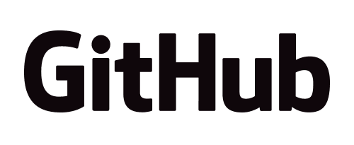

Hello world!
Rails Girls comes to the Digital Humanities! During the free one-day workshop we'll dive into the magical world of Ruby on Rails.
Applications are now closed.
You learn designing, prototyping and coding with the help from our coaches.
You need your own laptop, curiosity and a sprinkle of imagination!
Want to help? We are thinking ahead to our next workshop. If you are interested in helping in the future, please email us.
| 4:30 - 6:30pm |
Pre-Workshop Installation PartyGet know the attendees a little bit before the workshop. Bring your laptop so we can install Ruby on Rails for you.Where: Roy Rosenzweig Center for History and New Media, George Mason University |
|---|
| 9:00 - 10:00 |
Registration, Coffee and Installation FestDuring the morning we’ll help install Ruby on Rails on your computer. |
|---|---|
| 10:00 - 10:15 |
WelcomeOutline of the day & word from sponsors. |
| 10:15 - 11:00 |
TutorialsIntro to the Terminal and Intro to Ruby |
| 11:00 - 12:45pm |
App BuildingBuilding a Map App Tutorial |
| 12:45 - 1:45 | Lunch |
| 1:45 - 2:00 |
Bentobox - Understanding Web AppsRecap of what we’ve learned and how it all fits together. |
| 2:00 - 2:30 |
Coding in the Digital Humanities |
| 2:30 - 4:30 |
App BuildingContinue building and extending your application. |
| 4:30 - 5:00 |
Where and How to Continue Learning |
5:30 |
After-PartyOpen to everyone, meet cool people interested in tech and digital humanities. |
Applications are now closed
Acceptances informed: August 26
Location: George Mason University Research 1, Room 163 4400 University Dr, Fairfax, VA 22030
Parking available in the Shenandoah Parking Deck
Rails Girls Digital Humanities is made possible by our awesome partners and sponsors.
Since 1994, the Roy Rosenzweig Center for History and New Media (CHNM) at George Mason University has used digital media and computer technology to democratize history — to incorporate multiple voices, reach diverse audiences, and encourage popular participation in presenting and preserving the past.
The Maryland Institute for Technology in the Humanities (MITH) is a leading digital humanities center that pursues disciplinary innovation and institutional transformation through applied research, public programming, and educational opportunities.
The Association for Computers and the Humanities is a community-driven society for the digital humanities. ACH supports and disseminates research and cultivates a vibrant professional community through conferences, publications, and outreach activities.
 George Mason University, located in the heart of Northern Virginia’s technology corridor near Washington, D.C., is an innovative, entrepreneurial institution with national distinction in a range of academic fields.
George Mason University, located in the heart of Northern Virginia’s technology corridor near Washington, D.C., is an innovative, entrepreneurial institution with national distinction in a range of academic fields.
 GitHub is the best place to share code with friends, co-workers, classmates, and complete strangers. Over three million people use GitHub to build amazing things together.
The American Association of University Women has been empowering women as individuals and as a community since 1881. For more than 130 years, we have worked together as a national grassroots organization to improve the lives of millions of women and their families.
How much does the workshop cost? Nothing, it's free! You just need to be excited!
Who is this aimed for? Women of any age with basic knowledge of working with a computer. We’ve had people of all ages taking part. Please bring your laptop.
Can men attend? Yes, but you need to be accompanied by an interested lady. Also, girls are given a priority.
I know how to program - How can I help? We’re also looking for people to be coaches. We’ll have a workshop before the event to walk you through the curriculum. Email us